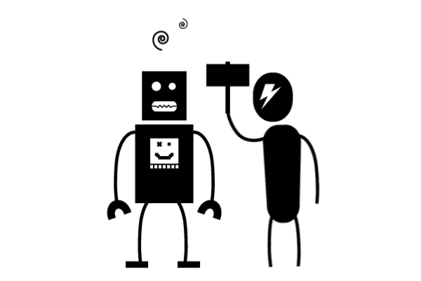
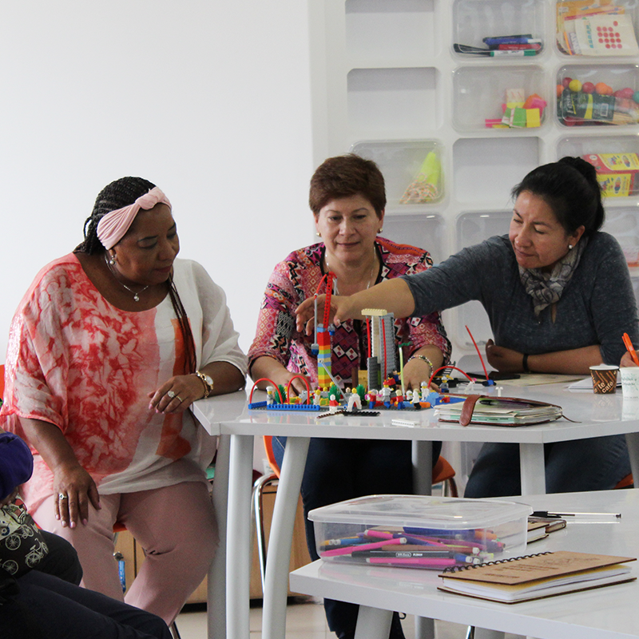
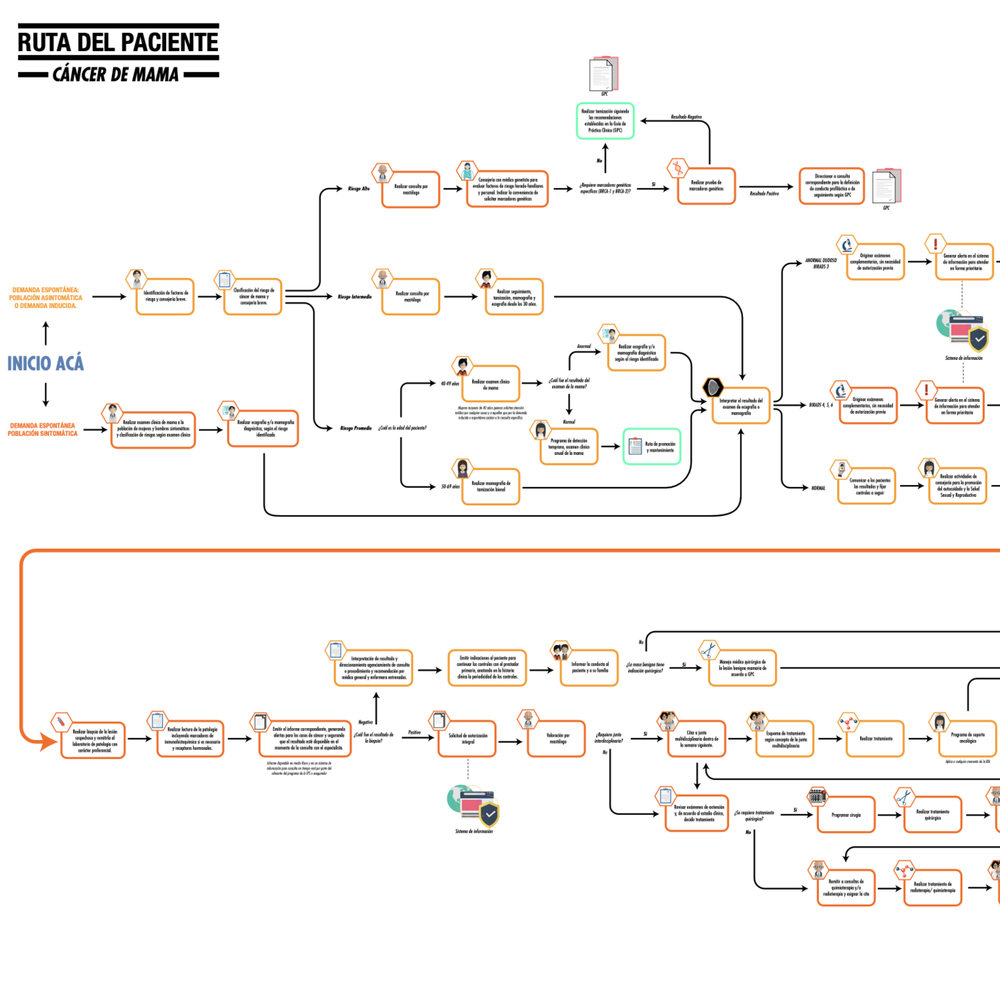

Product and Service Design
Projects that have focused on designing new or improved value propositions in order to provide better customer experiences and interactions.

Tackling deforestation through service design
The environmental sector in Colombia has a lot of information, unfortunately it is not readily available to stakeholders and decision-makers. How can we improve decision making by easing access and usage of this information?
Read more...

Teacher training programmes in Colombia are not producing the expected results. How could we enhace teachers’ experiences so that they appropriate and implement novel methodologies in their classroom?
Designing a “living lab” for education
Teacher training programmes in Colombia are not producing the expected results. How could we enhace teachers’ experiences so that they appropriate and implement novel methodologies in their classroom?
Read more...

Cancer treatment has many areas where it can be improved by technology. How can we reduce uncertainty in treatments through the use of data science and visualization to provide better treatment courses?